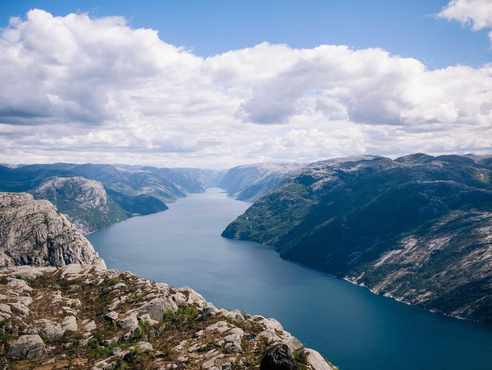

The coast, mapped to two centimetres
Lysefjord
We flew the 42 kilometres of the fjord in nine days and turned 1.8 billion laser points into one model the rescue service now plans by.
Open the Lysefjord modelWhat a survey delivers
One flight plan, one crew, and a model you can open in the browser the week after.
- Accuracy2 cm, checked on the ground
- FormatsLAS, glTF, GeoTIFF
- ViewerIn the browser, no install
- From38,000 kr a survey day